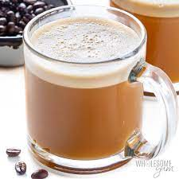

Bullet Proof Coffee

Description
Bullet proof coffee is a great way to upgrade your morning pick-me-up into your breakfast-in-a-cup.
You're basically transforming your coffee into a meal by adding beneficial fat calories via butter and/or coconut oil. The result is a keto-friendly drink that can keep your hunger satiated until lunchtime!
Ingredients
- Coffee
- Butter
- Coconut oil
- Cocoa powder (optional)
Steps
- We're going to use a Magic Bullet mini blender for this receipe. Pour your usual amout of coffee into the short plastic tumbler.
- Add 1 tablespoon of butter, and 1 tablespoon of coconut oil.
- If you'd like, you can also add 1 teaspoon of cocoa powder to mocha-fy your beverage experience.
- Screw on the mixer lid and place the tumbler, lid-side down, into the Magic Bullet. Push firmly down on the tumbler to engage the mixing action. The mixer spins at several thousand RPMs, so it only takes a few seconds.
- Unscrew the lid and pour this frothy concoction into your favorite mug. You should end up with nice layer of foam on top. Enjoy!